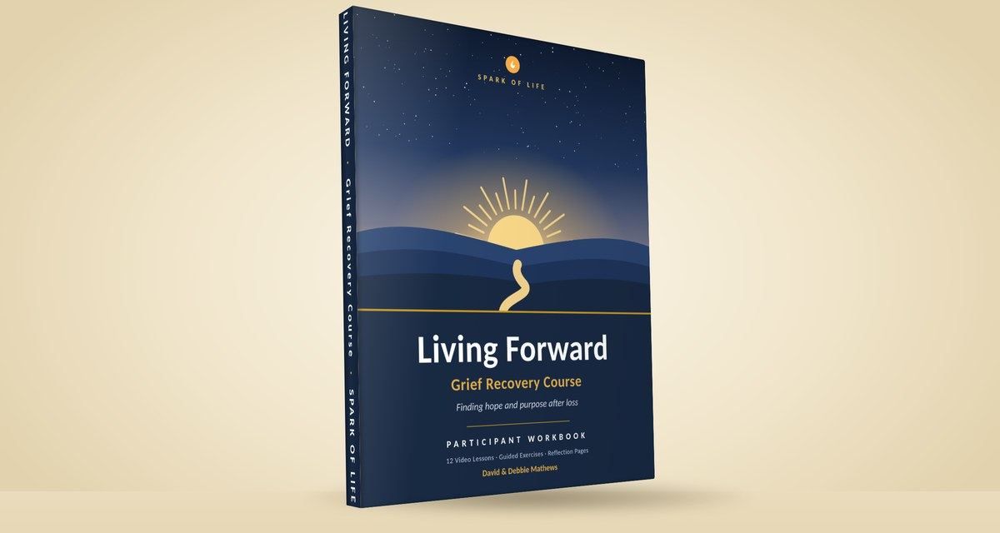

Grief can make it hard to breathe, hard to sleep, and hard to imagine that life will ever feel whole again. If that’s where you are, you’re not alone, and you don’t have to find your way through it by yourself.

Spark of Life exists to instill hope that, though life can never be the same after loss, it can be rich and fulfilling. We are here to walk beside you on that journey, and hope begins now. We are a non-profit organization.
Mailing address: P.O. Box 276, Thompson's Station, TN 37179